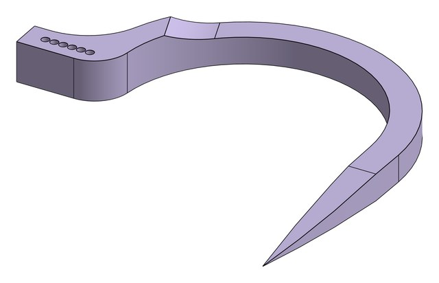

Soil Sampling Drone Attachment
A cable-suspended soil sampler that lets a fleet of drones map soil moisture without landing.
Overview
From January to May 2026, I worked on the soil sampling module for HydroFleet, a multi-drone system for high-resolution soil moisture mapping built at the Olin College Robotics Lab in collaboration with MIT. The module hangs on a cable about 2 m below each drone: it lands on the soil, anchors itself, drills an auger with a moisture probe into the ground, takes a reading, and lifts off again, so the drone never has to land. We tested the system on a working farm, Powisset Farm in Dover, MA.

My role
I was a Mechanical and Hardware Engineer on the soil sampling module, as a first-year on an 11-student team. My main parts were the anchor design, a redesign of the base, switching to more powerful servos for the anchors, adding an ultrasonic sensor so the auger could start and stop on its own, and shortening the soil moisture probe to save weight. On the software side, I worked out the landing and probing sequence: how to get the anchors into the ground most reliably. I designed in Onshape, printed parts on Prusa 3D printers, and programmed the sampler's Arduino.
Design & build
Anchors
To drill reliably, the sampler needs a firm grip on the ground: otherwise the auger lifts the whole module instead of digging. Passive spikes stopped it twisting but not lifting, so we moved to active, servo-driven anchors. The first 9 g servos were too weak to pierce the ground, so we switched to three 8.5 kg·cm coreless MEUS Racing servos, which have a much higher torque-to-weight ratio and dug in far better. The anchors were then too flimsy and broke as soon as they hit dirt, which thicker mounting screws fixed. A tapered profile, narrow at the tip and widening, made the anchor easier to dig in, but it stopped where the taper ended and could be pulled out. Making the anchor circular let the taper continue along an arc, so it digs deeper and sits perpendicular to the force from the auger, which also minimizes how much the sampler lifts.




Base redesign
I redesigned the base from scratch to cut weight while keeping it flat and stable on the ground. I pocketed it to lighten it and added holes for spikes, which give the sampler good contact with the soil before the anchors go in and stop it rotating while the auger digs.


Ultrasonic sensor for autonomous digging
The auger is driven by a continuous servo, which gives no position feedback, so the sampler had no way to know how far the probe had gone into the soil. I changed the design to mount an ultrasonic sensor that measures the distance between the stationary part of the module, sitting on the soil, and the moving part that carries the auger. With that measurement, the sampler can turn the auger's digging on and off autonomously, and abort instead of recording bad data if the probe can't get deep enough, for example because of a rock or a poor landing. I tested it against a time-of-flight sensor: the time-of-flight sensor was more precise on paper but was easily thrown off by leaves and grass between the plates, while the ultrasonic sensor gave reliable readings in the field.
Lighter moisture probe
The soil moisture sensor came with a long probe and a heavy housing that carried weight we didn't need. I shortened the probe: it was cut down, TIG-welded back together, and rewired to the module's own circuit, saving 47 g.

Landing and probing sequence
On the software side, I worked out the landing and probing sequence the sampler's Arduino runs once it touches down: extend the anchors, drive the auger and probe into the soil, take several moisture readings, retract the probe, and retract the anchors. The hardest part was getting the anchors into the ground reliably, so I tested different approaches: driving them in all at once in one fast motion, digging them in over multiple passes, and running them at different speeds. Digging in incrementally at high intensity worked best across different soils: the anchors went deepest and held best over repeated tests.

Final design
The final version brought these changes together: refined anchors that grip the soil reliably, a lighter base, a shortened probe, and ultrasonic feedback on the auger, reaching a 5.25 in sampling depth.

The team calibrated the moisture sensor against soil mixed to known water contents from 0% to 50%, giving a strongly linear calibration curve (R² = 0.9969).

Results
- Won Best Use of Drones at the Farm Robotics Challenge
- Drone and hand-held measurements of the same soil agreed with R² = 0.947 over 10 samples
- Sampler landing accuracy: CEP50 of 0.234 m over 11 flights (drone navigation: CEP50 of 0.43 m)
- 5.25 in sampling depth, with the device kept below the drone's 680 g maximum payload capacity
- A provisional patent application has been filed with our MIT partners


What I learned
- Hanging loads don't stay still. With the sampler hung from one point, every twist it made in the air was passed up to the drone, which spun along with it. Spreading the load over three braided cords that meet at a low-friction marine fishing swivel let the sampler turn on its own without dragging the drone around.
- Soil pushes back. In compacted clay, the auger's push into the ground turned into an upward force that lifted the whole sampler off the surface. Solving that took many rounds of iteration and testing in real soil. The final setup uses three anchor arms spaced about 120° apart, with curved, tapered tips that slide into the clay at right angles to the auger's reaction force so they don't pull out, plus fixed spikes under the base that keep it from spinning.
- Drone weight limit. Staying under the drone's payload limit shaped every decision: 3D-printed gears, an aluminum shaft, a lightweight Arduino Nano for onboard computing, and power drawn directly from the drone's battery instead of a separate power source.
- Get creative, and don't get attached to old designs. Some of the biggest weight savings came from unconventional ideas, like cutting down and rebuilding the soil moisture sensor by hand, and from questioning earlier design decisions. Rather than tweaking the old base, I redesigned it from scratch.